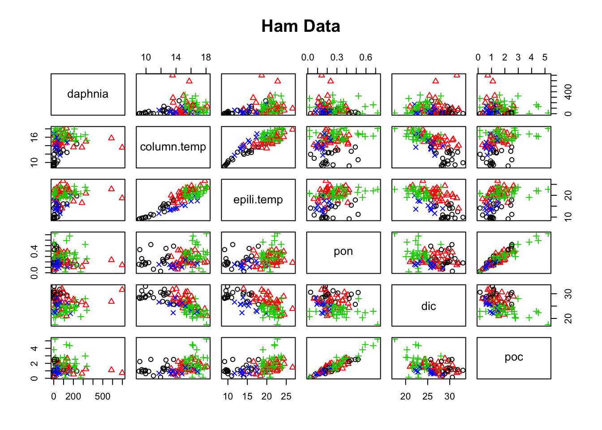
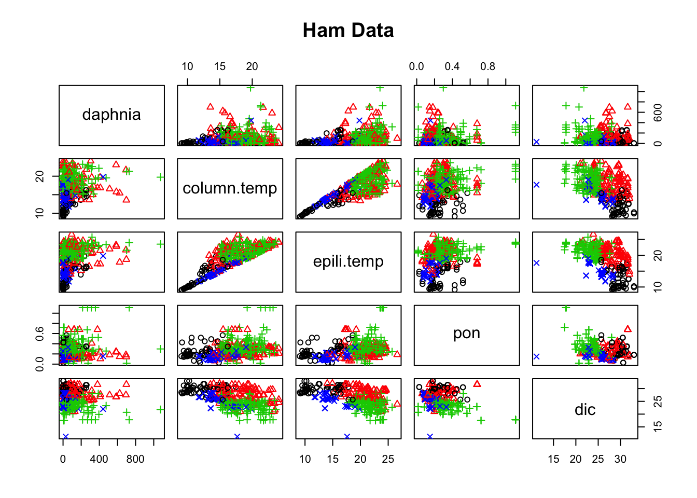
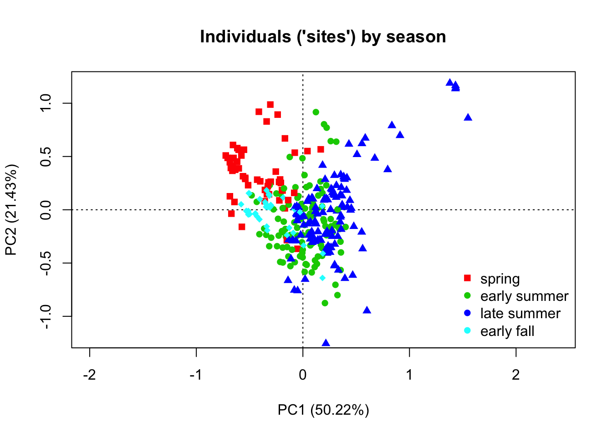
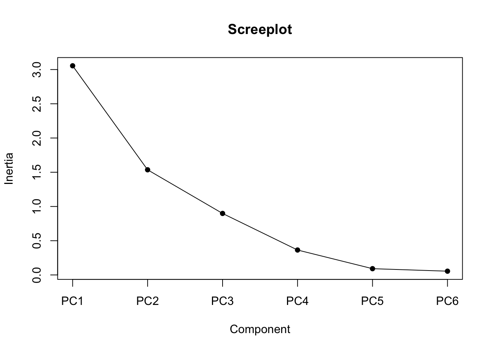
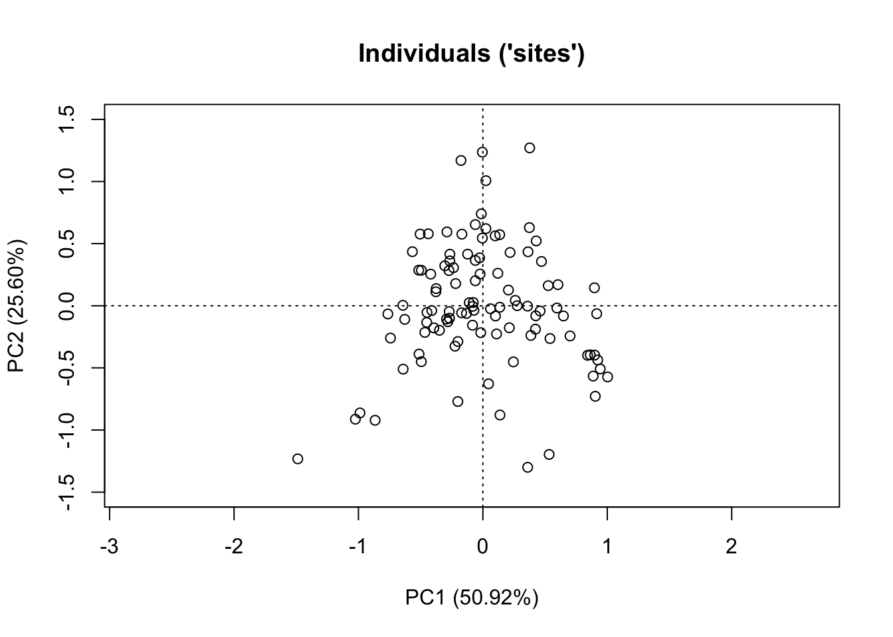
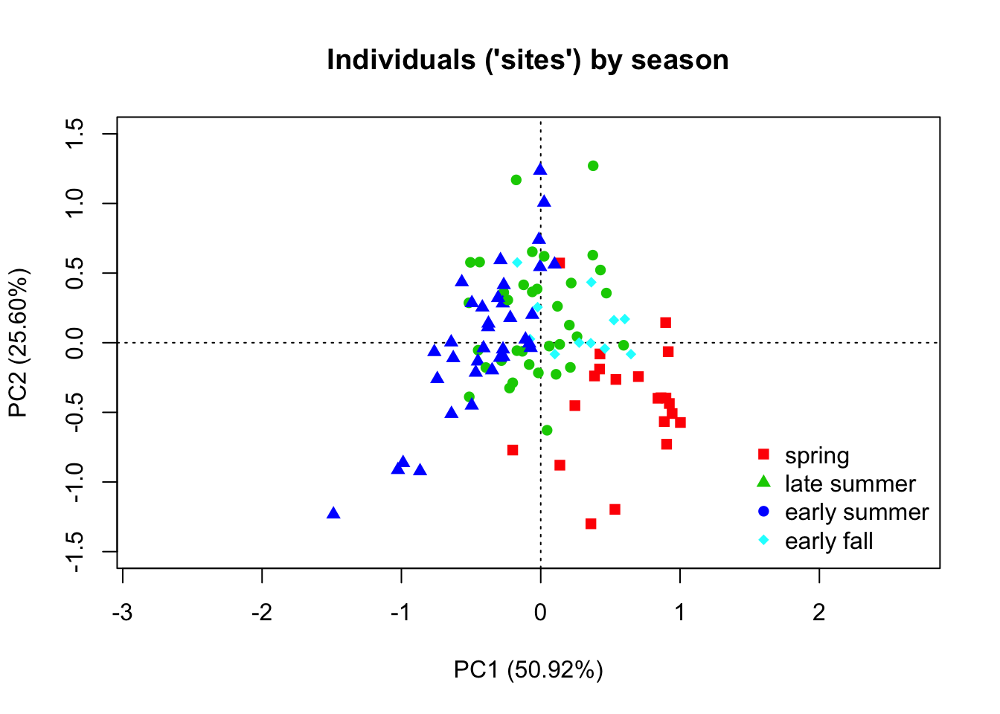
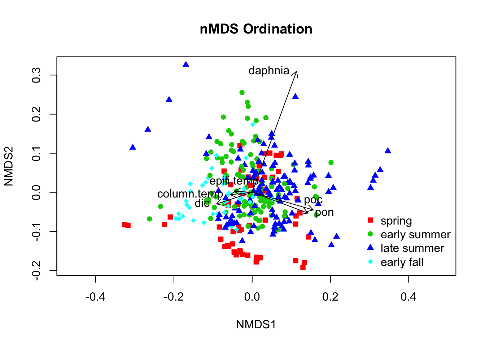

7 Multivariate analysis
7.2 Introduction to multivariate analysis
In previous sections, we have discussed scenarios where there is one response variable. If we have multiple responses, \(y_1\)…\(y_n\), and multiple predictors, \(x_1\)…\(x_n\), then we need multivariate approaches.
These methods allow us to represent the variables or observations in a lower-dimensional space, such as a two-dimensional or three-dimensional plot, while preserving the overall structure of the data.
OUTLINE: “Large zooplankton such as Daphnia, large copepods or predatory Cladocera (Bythotrephes, Cercopagis, Leptodora) are much better prey for forage fishes, so changes in their populations (or shifting drivers) are of particular interest.”
Question: What are the major drivers of Diaphnia biomass?
Variables: Daphnia biomass (mg/m3), water column temperature (°C), epilimnion temperature(°C), particulate organic nitrogen (mg/L), dissolved inorganic carbon (mg/L), particulate organic carbon (mg/L)
In our new dataframe, different seasons are represented by numeric numbers from 1 to 5. We would like to re-code them into string factors, for easier visualization in later graphics. There are many ways to do this, here we introduce using the factor() function.
1 2 3 4
57 113 118 40 7.3 Principle Component Analysis (PCA)
Principle component analysis is a linear transformation method that converts the original set of variables into a new set of linearly uncorrelated variables, called principal components (PCs), which are sorted in decreasing order of variance.
7.3.1 Correlation examination
First of all, we need to examine the correlation between our variables. We can achieve this by running a correlation test using cor() function, or creating a correlation plot using pairs() function.
| daphnia | column.temp | epili.temp | pon | dic | poc | |
|---|---|---|---|---|---|---|
| daphnia | 1.0000000 | 0.2293285 | 0.3230253 | 0.1233690 | -0.1169047 | 0.1437126 |
| column.temp | 0.2293285 | 1.0000000 | 0.8167008 | 0.3083830 | -0.4815168 | 0.3670961 |
| epili.temp | 0.3230253 | 0.8167008 | 1.0000000 | 0.3098929 | -0.5021353 | 0.3857810 |
| pon | 0.1233690 | 0.3083830 | 0.3098929 | 1.0000000 | -0.2834075 | 0.9459712 |
| dic | -0.1169047 | -0.4815168 | -0.5021353 | -0.2834075 | 1.0000000 | -0.3846432 |
| poc | 0.1437126 | 0.3670961 | 0.3857810 | 0.9459712 | -0.3846432 | 1.0000000 |

Dimension reduction techniques such PCA works the best when variables are strongly correlated with each other. From the above correlation test output and plot, we can see that some variables clearly have a linear relationship, such as water column temperature and epilimnion temperature, or water column temperature and dissolved inorganic carbon.
7.3.2 PCA with standardized data
Now we can start with running our principle component analyses. PCA can be computed using various functions in R, such as prcomp() in stats package, princomp() in stats package, rda() in vegan package.
Here we demonstrate using the vegan package, since it also allows easy visualization of our results. Keep in mind that we need to run the PCA on all columns containing continuous variables, which is column 4 - 9 in the ham.multi dataset.
Call:
rda(X = ham.multi[, 4:9], scale = TRUE)
Partitioning of correlations:
Inertia Proportion
Total 6 1
Unconstrained 6 1
Eigenvalues, and their contribution to the correlations
Importance of components:
PC1 PC2 PC3 PC4 PC5 PC6
Eigenvalue 3.0133 1.2857 0.9019 0.57514 0.1770 0.047034
Proportion Explained 0.5022 0.2143 0.1503 0.09586 0.0295 0.007839
Cumulative Proportion 0.5022 0.7165 0.8668 0.96266 0.9922 1.000000
Scaling 2 for species and site scores
* Species are scaled proportional to eigenvalues
* Sites are unscaled: weighted dispersion equal on all dimensions
* General scaling constant of scores: 6.655409
Species scores
PC1 PC2 PC3 PC4 PC5 PC6
daphnia 0.9767 -0.9315 -2.2964 0.52564 0.10599 0.00045
column.temp 2.1337 -1.1389 0.4750 -0.84259 0.77265 0.01578
epili.temp 2.1945 -1.1988 0.1987 -0.62965 -0.83207 -0.03190
pon 1.9948 1.7653 -0.3022 -0.17437 0.04365 -0.40417
dic -1.8082 0.5322 -0.9965 -1.68304 -0.04658 0.04264
poc 2.1620 1.5780 -0.1877 -0.01352 -0.04505 0.42518
Site scores (weighted sums of species scores)
PC1 PC2 PC3 PC4 PC5 PC6
sit1 -0.601634 0.3885262 -0.158695 0.102933 0.1655011 0.333793
sit2 -0.196510 -0.2004236 0.127205 -0.642207 0.1070714 0.007366
sit3 -0.190506 -0.2084349 0.120883 -0.637570 -0.2916448 -0.038325
sit4 -0.146629 -0.2634170 0.156631 -0.736766 0.2421800 0.011811
sit5 -0.188428 -0.2099248 0.139186 -0.663422 0.2032287 0.016335
sit6 -0.159409 -0.2524372 0.098350 -0.674051 -0.1976415 -0.034287
sit7 -0.076292 -0.4923387 -0.460920 0.135292 -0.1504689 -0.032391
sit8 -0.242282 -0.3421360 -0.091195 0.087947 0.0485281 0.106174
sit9 -0.357991 0.0798586 -0.230681 -0.044937 -0.4058041 0.186120
sit10 -0.050404 -0.3665789 0.142980 -0.146548 0.2774292 0.201427
sit11 -0.150478 -0.2847522 -0.309505 0.274005 -0.4738068 0.140669
sit12 -0.337010 0.1455180 -0.454757 0.071055 0.2362431 0.299432
sit13 -0.337780 0.1634913 -0.316337 0.009996 -0.3430906 0.234404
sit14 0.085235 0.1125541 -0.119853 0.345385 -0.1086747 -0.239454
sit15 0.169030 -0.3284519 0.126677 0.059390 0.2607800 0.256351
sit16 0.074023 -0.2105352 0.046216 0.264210 -0.4355833 0.199042
sit17 -0.363011 -0.1765170 -0.346708 0.067022 0.2769241 0.125014
sit18 -0.562023 0.3145768 -0.115591 0.144698 0.1579823 0.082778
sit19 -0.622300 0.3896560 -0.157199 0.257194 0.1967906 0.099963
sit20 0.295754 -0.5256298 0.301202 0.050542 0.4036026 0.286246
sit21 0.080335 -0.2343257 0.329830 0.391710 -0.9413234 0.181483
sit22 0.064431 -0.0771622 0.116601 -0.857415 0.2200680 -0.459718
sit23 -0.675883 0.3923273 -0.018497 0.449871 0.1192565 0.304262
sit24 -0.135983 -0.4384811 0.074982 -0.005865 -0.3415944 0.069614
sit25 0.088093 -0.3148339 0.069515 -0.461382 0.2670816 0.213447
sit26 -0.053809 -0.1692026 -0.311115 -0.017424 -0.5091618 0.158389
sit27 -0.189221 -0.3551163 -0.265061 -0.746650 0.2761418 0.144720
sit28 -0.213056 -0.4895306 -1.712512 0.106851 -0.2507470 0.097229
sit29 -0.301556 0.2632200 -0.144557 -0.006038 -0.0450036 0.107109
sit30 -0.116025 -0.2366661 0.136455 -0.646192 0.0046395 -0.306293
sit31 -0.233191 -0.0849504 0.094738 -0.430542 -0.6580469 -0.355354
sit32 -0.188465 -0.4950414 -0.767565 0.179809 0.4138109 0.079078
sit33 -0.344512 -0.2353391 -0.320127 0.182031 -0.2537983 0.035538
sit34 -0.552933 0.5635551 -0.087426 0.214043 0.0929099 -0.002595
sit35 0.070856 -0.0371205 0.296809 -0.215109 0.1911239 0.651012
sit36 -0.050585 0.1118484 0.181867 0.048057 -0.4879175 0.601342
sit37 -0.001368 -0.3748648 0.341673 -0.380526 0.1499189 0.403845
sit38 -0.164824 -0.1808435 0.129301 0.008164 -0.8597551 0.326569
sit39 -0.002258 -0.4468546 -0.345700 0.204673 -0.4797931 0.046607
sit40 -0.658107 0.4103807 -0.038934 0.413499 0.1233154 0.299319
sit41 -0.685332 0.4459234 -0.043973 0.457343 0.1142028 0.304051
sit42 -0.636464 0.3844606 -0.014735 0.367512 0.1270427 0.295078
sit43 -0.635698 0.3755266 -0.083176 0.404023 0.1418420 0.296862
sit44 -0.051700 -0.2422172 0.062483 -0.088798 -0.7895507 -0.110036
sit45 -0.117382 -0.5288729 -1.346803 0.369430 0.2067918 -0.012208
sit46 0.069726 -0.3343328 0.150197 -0.184734 0.2222523 0.056053
sit47 -0.009283 -0.3053495 -0.517768 0.323157 -0.4962005 -0.004552
sit48 0.324297 -0.8011352 -1.025878 -0.159805 0.6611809 -0.404563
sit49 -0.572683 -0.1601513 0.077303 -0.294912 0.1746057 0.294308
sit50 -0.670952 -0.0366263 0.012642 -0.101994 -0.2063745 0.272779
sit51 0.140785 -0.4387497 -0.146614 -0.002810 0.1138704 0.372380
sit52 -0.002446 -0.2377218 -0.061840 0.183943 -0.6404200 0.318043
sit53 0.180688 -0.4321212 0.218720 -0.075534 -1.0367754 0.203217
sit54 -0.017454 -0.0848075 0.109711 -0.725129 0.0136644 -0.377140
sit55 -0.209531 0.1479993 -0.092916 -0.303361 -0.8223595 -0.429077
sit56 0.179798 -0.3595944 0.386314 -0.099935 -0.0696554 0.519738
sit57 0.052419 -0.2121843 0.190606 0.215235 -0.6784735 0.479495
sit58 0.020016 0.0119456 0.121663 -0.294417 -0.9570242 -0.967955
sit59 0.400659 -0.1616583 0.457942 -0.437373 0.3014286 0.301572
sit60 0.560513 -0.3662953 -0.055354 0.337368 0.5355596 0.967432
sit61 0.319248 -0.0116154 0.226912 0.574044 -0.7195058 0.877030
sit62 0.467245 -0.6145573 -0.309669 0.510230 0.4872574 -0.437835
sit63 -0.005537 -0.4046332 0.076429 0.045836 -0.4032174 0.309377
sit64 0.353855 -0.5659524 0.399966 0.055834 0.3825439 0.246008
sit65 0.210952 -0.3935707 0.238846 0.380903 -0.4566147 0.183200
sit66 -0.311418 0.2304439 -0.019041 -0.304726 -0.0295281 0.198389
sit67 -0.248268 0.1525857 0.036017 -0.436714 0.2352427 0.214389
sit68 -0.023758 -0.0441231 0.110941 -0.585451 0.2002636 0.467699
sit69 0.300587 -0.1402726 0.301549 -0.234052 0.3612497 0.226666
sit70 0.260766 -0.0871755 0.298804 -0.163906 0.0097139 0.195860
sit71 0.328518 -0.1597144 0.453931 -0.360160 0.3436743 0.218174
sit72 0.305429 -0.1323185 0.426782 -0.311879 0.3995596 0.229379
sit73 0.343408 -0.1807773 0.442334 -0.375700 0.3304913 0.213623
sit74 -0.329572 0.2220566 -0.263851 -0.243631 -0.1602358 -0.481056
sit75 -0.169016 0.0135890 -0.218972 -0.519677 0.2502275 -0.469256
sit76 0.340054 -0.1704422 0.399061 -0.361336 0.2965710 0.148741
sit77 0.179256 0.0227403 0.211968 0.005914 -0.5788880 0.085761
sit78 0.015099 -0.0610295 0.217940 0.029484 -0.2684907 0.392647
sit79 -0.634790 0.3843066 -0.046588 0.226109 0.1237562 0.227684
sit80 -0.513706 0.2305775 0.013352 0.010535 0.1533495 0.205257
sit81 0.113534 -0.4746931 -0.494225 0.069246 -0.5528284 -0.153651
sit82 0.305218 -0.7040281 -0.262234 -0.374713 0.5375353 -0.073401
sit83 -0.615141 0.5785679 -0.148650 0.101003 0.1013078 0.228286
sit84 -0.602897 0.5631233 -0.141870 0.079081 0.0933601 0.224795
sit85 0.131766 -0.5080465 -0.679223 -0.068195 0.2482970 -0.273091
sit86 0.110387 -0.5374517 -1.191430 0.267994 -0.5193733 -0.351977
sit87 0.333081 -0.5659301 -0.697441 0.330753 -0.0044578 -0.037000
sit88 0.140781 -0.2825730 -0.461190 0.503618 -0.6301462 -0.067330
sit89 -0.577166 0.5092729 -0.137689 -0.064587 0.1260932 -0.110930
sit90 -0.655848 0.6080611 -0.186450 0.081307 0.0927379 -0.097888
sit91 -0.254287 0.3581156 0.077888 0.245248 -0.0980810 0.169985
sit92 -0.148178 -0.3494305 -0.036452 -0.015904 0.1359261 0.088213
sit93 -0.227284 -0.2425419 -0.028524 0.114014 -0.4839503 0.035705
sit94 -0.040705 0.1278095 0.022138 -0.543950 -0.8604326 -0.554602
sit95 0.099763 -0.0516397 0.094250 -0.816380 -0.0025181 -0.488807
sit96 0.453914 0.0137287 0.531979 0.159589 0.3456826 0.268526
sit97 0.350973 0.1395898 0.429069 0.388943 -0.3572459 0.212250
sit98 0.127513 -0.0003175 -0.013372 -0.737579 -0.6707923 0.600394
sit99 0.265750 -0.1831185 0.004573 -0.977522 0.2249344 0.671108
sit100 0.279212 -0.2094760 -0.070967 -0.952614 0.1024863 0.654950
sit101 0.211370 -0.1537485 -0.376488 -0.666508 -0.4732464 0.606346
sit102 0.193000 -0.0900151 -0.031676 -0.836466 -0.2419151 0.634516
sit103 -0.297400 -0.2621026 -0.497503 0.398365 -0.0901018 0.063194
sit104 0.357127 -0.4005323 0.529665 -0.071394 0.4502265 0.529480
sit105 0.221640 -0.2388356 0.355001 0.260687 -0.8064763 0.418617
sit106 0.183880 -0.6396421 -0.540960 0.591605 0.5891042 0.217798
sit107 0.006836 -0.3346557 0.056621 0.543657 -0.1490942 0.170157
sit108 0.227157 -0.4074716 -0.017855 0.542259 -0.4240453 -0.613907
sit109 0.393985 -0.6442697 -0.138526 0.335134 0.5250249 -0.542662
sit110 -0.650837 0.4864998 -0.087815 0.263479 0.1106049 0.144238
sit111 -0.622823 0.4511662 -0.071831 0.212259 0.1241192 0.139783
sit112 -0.223825 0.2610579 -0.353120 -0.439564 0.2275944 -0.378404
sit113 -0.196459 0.1850378 -0.699920 -0.283846 0.0694338 -0.400299
sit114 -0.213973 0.2841360 -0.043314 -0.620302 -0.0165593 -0.409034
sit115 -0.206596 0.2516754 -0.238879 -0.524513 0.0556324 -0.401693
sit116 -0.190791 0.1807635 -0.669441 -0.313333 0.2290644 -0.383825
sit117 -0.220877 0.0881044 -0.557498 -0.189230 0.2443573 -0.536259
sit118 -0.322428 0.2568827 -0.269279 -0.184472 -0.2557208 -0.571896
sit119 -0.179526 -0.1115506 0.118881 -0.758779 0.0424682 0.253470
sit120 -0.275614 0.0038383 0.008200 -0.542628 -0.3749775 0.227616
sit121 -0.064420 -0.2906288 0.288757 -0.132895 0.3236620 -0.095299
sit122 -0.099320 -0.2880363 -0.095495 0.142161 -0.0386207 -0.126694
sit123 -0.345881 0.0267871 0.087892 0.370685 0.2507271 -0.202062
sit124 -0.317963 0.1454291 0.087554 0.152535 -0.0425345 -0.498102
sit125 -0.355994 0.1863634 0.002472 0.261401 -0.2226646 -0.509819
sit126 0.087541 0.0206278 -0.081689 -0.869218 0.1731138 -0.350093
sit127 -0.069965 0.2111700 -0.251276 -0.520981 -0.5310645 -0.394744
sit128 0.198997 -0.1087755 0.350935 -0.195022 -0.6569742 -0.141445
sit129 0.352769 -0.2994905 0.480920 -0.523953 0.3741039 -0.059391
sit130 0.264606 -0.3548128 0.536761 0.002581 0.2799021 -0.377423
sit131 0.141690 -0.2054824 0.408690 0.274064 -0.3522607 -0.421499
sit132 0.032817 0.2127734 0.031416 -0.228944 -0.5604923 0.039918
sit133 0.180750 0.0317612 0.176270 -0.553760 0.3277889 0.107216
sit134 0.327261 -0.2499365 0.272084 -0.369005 -0.0001001 0.442435
sit135 0.333459 -0.1625336 -0.175234 -0.864377 0.0683503 0.627579
sit136 0.265048 -0.1555385 0.313957 -0.217517 0.0302980 0.178865
sit137 0.092998 0.0613670 0.201953 0.126967 -0.9277546 0.108720
sit138 0.275135 -0.2499460 -0.096815 0.155587 -0.5146280 -0.560207
sit139 -0.177522 0.2004884 0.022587 -0.178982 -0.1240356 -0.294904
sit140 0.356127 -0.0560102 0.140922 -0.249920 0.0977009 0.300497
sit141 0.219452 0.1052487 -0.048493 0.087489 -0.9758759 0.210365
sit142 -0.004242 0.4831121 -0.050579 -0.407648 0.1463115 -0.037647
sit143 0.144270 0.1336023 0.162683 -0.257287 0.0169087 -0.605615
sit144 0.062439 0.2278850 0.027630 -0.039841 -0.7598186 -0.674421
sit145 0.551809 -0.2095484 0.315975 -0.128892 0.3128877 0.363357
sit146 0.374868 0.0221235 0.277409 0.179291 -0.5340477 0.306313
sit147 0.115710 -0.2969842 -0.118930 0.141867 -0.5122830 -0.225172
sit148 -0.661456 0.3659404 -0.049195 0.325794 0.1343395 -0.227002
sit149 0.112627 -0.1081745 0.158430 0.141772 0.1840558 -0.287189
sit150 0.198518 0.0902042 0.392609 0.353746 -0.8436704 -0.157154
sit151 0.015529 -0.1430778 0.059869 -0.495271 0.3281069 0.372957
sit152 -0.132934 0.0479138 -0.004224 -0.215078 -0.5390903 0.307774
sit153 0.358682 -0.1834412 0.125579 -0.145788 0.0112285 -0.532675
sit154 0.215053 -0.3698726 -0.130456 -0.164603 -0.1817236 0.456732
sit155 0.251258 -0.3563529 0.410915 -0.533037 0.3422083 0.505198
sit156 0.254591 -0.3990229 0.076364 -0.347176 0.1477349 0.484257
sit157 0.169557 -0.2863488 0.067004 -0.200004 -0.4232813 0.438518
sit158 0.236084 -0.3410533 0.361620 -0.470117 -0.1610148 0.452496
sit159 0.083032 -0.5880063 -0.275885 -0.405768 0.4415620 -0.215163
sit160 0.016807 -0.5830356 -1.005474 0.117945 -0.3060020 -0.281437
sit161 0.206758 -0.8757492 -1.343968 -0.004703 0.7183357 -0.205725
sit162 0.035831 -0.5171925 -0.208833 -0.365144 0.1607681 -0.236831
sit163 -0.026802 -0.4357151 -0.228781 -0.249621 -0.2546052 -0.269883
sit164 0.015151 0.3255025 0.008009 -0.548357 0.0970408 -0.111379
sit165 -0.123475 0.4949913 -0.120157 -0.263189 -0.1444925 -0.108597
sit166 -0.080067 -0.1185539 0.260965 -0.269746 0.1570498 -0.199903
[ reached getOption("max.print") -- omitted 162 rows ]After completing the dimension reduction, each sample now appears as a point in space specified by its new position along the principle component axes. There coordinates are referred to as “site scores” in rda() results, and we can assess such information with the scores() function.
Meanwhile, our original variables are projected on the the new principle components. They are defined as “Loadings” and are referred to as “species scores” in rda() results. This information can be obtained with the scores() function too.
Remember:
“Sites” refer to your observations (the rows in your dataset).
“Species” refer to your descriptors (the columns in your dataset), which are the different environmental variables.
7.3.3 Screeplot
Now, let’s determine how many principle components to retain for further analysis. The screeplot() function allows us to visualize the variance explained by each of the principle components. Ideally, a curve should be steep, and then bend at an “elbow”, after which the curve flattens out. The first few principle components usually account for a large portion of the variance in the data, and should be retained.

Meanwhile, we can also look at the proportional variance explained by each principle component. Such information is available in the summary() of our PCA results. We see the first two PCs together explain roughly 72% of the total variance in this dataset. Along with the screeplot, we are confident that the first two PC are sufficient enough to represent our data.
For easier usage in future, let’s store them in a list:
[1] 50.22 21.437.3.4 Plot ordination for PCA
After we have chosen the first two principle components, now let’s start visualizing our multidimensional data in a 2-dimensional space.
As we have seen in previous materials, there are many different methods/packages for creating plots in R. Some of these resources are listed in the “Other Resources” section at the end if you are interested. For this tutorial, we demonstrate using the vegan package to visualize our multivariate results.
In general, plotting ordination with vegan follows two steps:
Use
ordiplot()to create an empty canvas (You can specify the title, axes, limits, and many other features during this step).Use
points()to add points representing samples or variables in the new dimensions. Usetext()to add labels.
Plot 1 - Site Plot (samples)
we can visualize the positions of our samples on the new axes (PC1 and PC2). This is the “site plot”.

What if we are interested in the seasonal patterns of our samples on the reduced dimensions? We can use the same graphing techniques, but group our dataset using different seasons. Make sure to label your seasons in the “legend”.

There are many other functions in the vegan package that allows customization of your ordination plots. For example, ordiellipse(pca.ham, display="sites", conf=0.95, kind="sd", groups=ham.multi$season) function allows us to add 95% confidence intervals to each group of samples.
Plot 2 - Species Plot (variables)
We can also plot how much influence each variable has on each of the two principle components. This is the “species plot”. The steps are very similar. Instead of display = "sites", we specify display = "species" in points().

Remember that positively correlated variables are grouped close together (formed angle around 0 degree); variables with about a 90 degree angle are not correlated; negatively correlated variables are positioned on opposite sides of the plot origin (~180 degree angle). The distance between the variables and the origin measure the contribution of that variable to the ordination. A shorter arrow indicates its less importance for the ordination. A longer arrow means the variable is better represented.
Plot 3 - BiPlot (samples and variables)
Finally, we can visualize all above information (sites and species) on one graph with a biplot. This time, we use the biplot() function in base R to do this.

Some important points for the biplot() function:
biplot()allows different scaling options to preserve either the Euclidean distance (in multidimensional space) among objects (sites), or the correlations/covariances between variables (species). To learn more, please refer to the function description or these online tutorials: QCBS workshop - Unconstrained Ordination Scaling; Tutorial 14.2 - Principle Component Analysis (PCA).biplot()can also be used to show only the samples or variables, by settingdisplay = "sites"ordisplay = "species". However, it does not allow us to visualize samples in different groups. This is why we introduce the slightly more complicatedordiplot()method in the previous sections.
7.4 Non-metric multidimensional scaling (nMDS)
The produced biplot in PCA represents well the distance among objects, but fails to represent the whole variation dimensions of the ordination space. Unlike PCA, non-metric multidimensional scaling (nMDS) does not to preserve the exact dissimilarities (distance) among objects in an ordination plot, instead it represents as well as possible the ordering relationships among objects in a small and specified number of axes.
In other words, the goal of nMDS is to represent the original position of samples in multidimensional space as accurately as possible using a reduced number of dimensions.
We can use the metaMDS() function in the vegan package to conduct non-metric multidimensional scaling in R. In addition to the input dataframe, this function also requires us to specify the distance measure distance = ? and number of reduced dimensions k = ?.
[1] 0.1360859From the nMDS results, we can extract the stress parameter. Stress identifies how well points fit within the specified number of dimensions.
A good rule of thumb for stress:
- \(>0.2\) Poor (risk in interpretation)
- \(0.1-0.2\) Fair (some distances misleading)
- \(0.05-0.1\) Good (inferences confident)
- \(<0.05\) Excellent representation
7.4.1 Shepard Plot
We can use a Shepard plot to learn about the distortion of representation. On the x-axis, it plots the original dissimilarity (original distances in full dimensions). On the y-axis, it plots the distances in the reduced dimensional space. Ideally, a really accurate dimension reduction will produce a straight line.
7.4.2 Plot ordination for nMDS
No we can plot the ordination for nMDS, just like for PCA in the previous sections. The steps exactly the same. We use ordiplot() to create an empty canvas first, then use points() to add samples/variables. Additionally, we would like to represent species scores with arrows.

7.5 Other resources
Multivariate analyses tutorials
- Building Skills in Quantitative Biology
- QCBS R Workshop Series - Multivariate Analyses in R
- Running NMDS using ‘metaMDS’(nMDS tutorial with vegan package)
- Introduction to Ordination
Useful R packages
- factoextra (for visualizing PCA results)
- learnPCA (an R package for PCA learning)
- ggbiplot